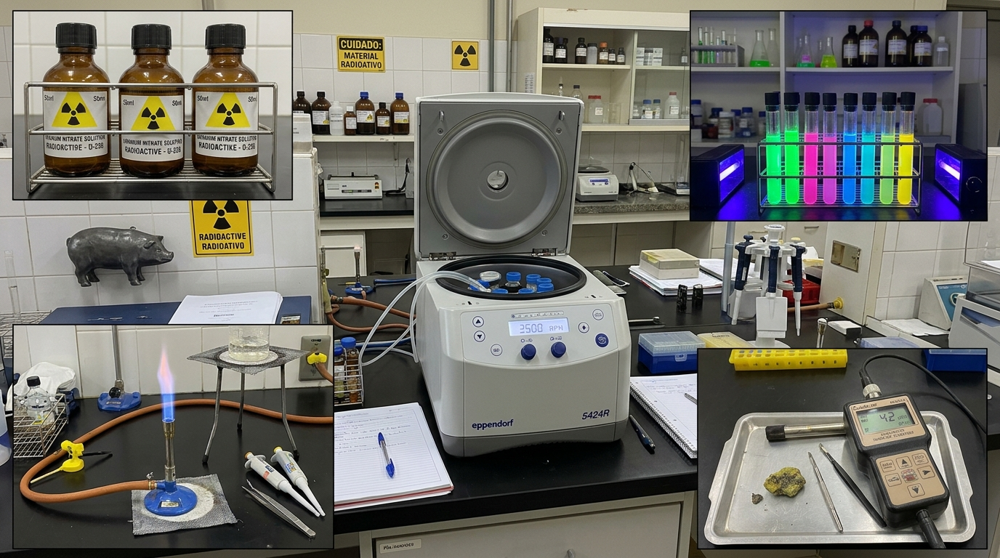

1. [Frascos de Urânio 1]
São recipientes especializados projetados para o armazenamento, transporte ou manuseio seguro de urânio em suas diversas formas químicas e graus de enriquecimento.
2. [Tubos Fluorescentes]
É um dispositivo de iluminação de descarga de vapor de mercúrio a baixa pressão que converte energia elétrica em luz visível.
3. [Centrífuga Digital]
É um equipamento controlado por microprocessador usado para separar partículas, células ou líquidos de diferentes densidades por meio de força centrífuga.
4. [Bico de Bunsen]
É um queimador a gás de pequeno porte usado em laboratórios para aquecer substâncias, esterilizar materiais e realizar reações.
5. [Contador Geiger]
É um queimador a gás de pequeno porte usado em laboratórios para aquecer substâncias, esterilizar materiais e realizar reações.